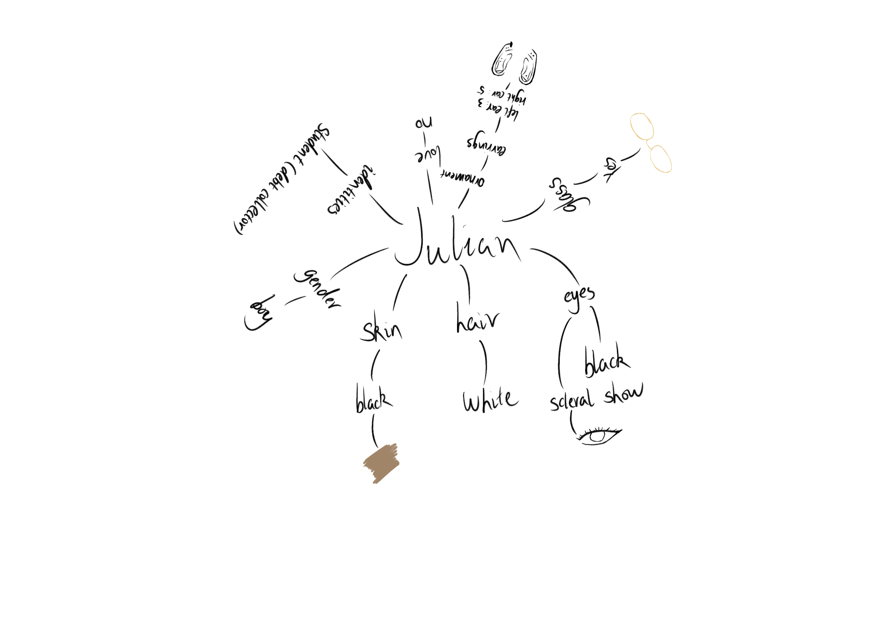

Step 1: Finding Inspiration
Listening to you is like listening to you. You shelve here shelve here? The situation is what it is, and what exactly it is, remains to be seen.

Step 2: Brainstorming
Listening to you is like listening to you. You shelve here shelve here? The situation is what it is, and what exactly it is, remains to be seen.

Step 3: Consultation
Listening to you is like listening to you. You shelve here shelve here? The situation is what it is, and what exactly it is, remains to be seen.